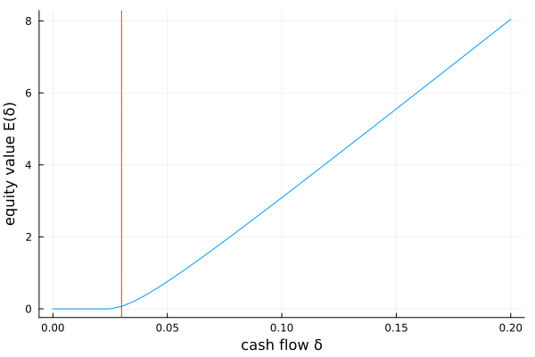

Leland (1994): optimal default
Leland's model of a levered firm is a classic optimal-stopping problem. Cash flow (EBIT) $\delta$ follows a geometric Brownian motion $d\delta = \mu\delta\,dt + \sigma\delta\,dW$. The firm has issued perpetual debt with coupon $C$ and faces a tax rate $\tau$; equity holders receive the after-tax flow $\delta-(1-\tau)C$ but may default (walk away) whenever they choose. Equity value $E(\delta)$ is thus the value of the option to keep the firm alive, and solves the HJB variational inequality
\[\min\Bigl\{\, r E - \bigl(\delta-(1-\tau)C\bigr) - \mu\delta\,E'(\delta) - \tfrac12\sigma^2\delta^2 E''(\delta),\;\; E(\delta)\,\Bigr\} = 0,\]
with default payoff $0$ (limited liability). This delivers the value-matching $E(\delta^*)=0$ and smooth-pasting $E'(\delta^*)=0$ conditions at the endogenous default threshold $\delta^*$.
The model
using EconPDEs, Plots
Base.@kwdef struct LelandModel
r::Float64 = 0.02
μ::Float64 = 0.0
σ::Float64 = 0.1
C::Float64 = 0.05 # coupon rate
τ::Float64 = 0.2 # tax rate
end
function (m::LelandModel)(state::NamedTuple, u::NamedTuple)
(; r, μ, σ, C, τ) = m
(; δ) = state
(; E, Eδ_up, Eδ_down, Eδδ) = u
μδ, σδ = μ * δ, σ * δ
Eδ = (μδ >= 0) ? Eδ_up : Eδ_down
f = δ - (1 - τ) * C
Et = -(f + Eδ * μδ + 0.5 * Eδδ * σδ^2 - r * E)
return (; Et)
endSolving it
The stopping (default) region is imposed with the lower bound y̲ = 0: equity can never be worth less than zero. We also pin the slope at the top boundary to that of a debt-free claim, $1/(r-\mu)$.
m = LelandModel()
stategrid = (; δ = range(0, 0.2, step = 0.005))
yend = (; E = max.(stategrid[:δ] ./ (m.r - m.μ) .- (1 .- m.τ) .* m.C ./ m.r, 0.0))
y̲ = zeros(length(stategrid[:δ]))
bc = (; Eδ = (0.0, 1 / (m.r - m.μ)))
result = pdesolve(m, stategrid, yend; y̲ = y̲, bc = bc, reformulation = :smooth)Residual_norm: 5.520048650800811e-11
Zero: OrderedDict(:E => [0.0, 0.0, 0.0, 0.0, 0.0, 0.0, 0.06714482871256738, 0.19730575322436308, 0.36398143682973016, 0.5534059631188454 … 5.80308529741426, 6.051708585944946, 6.300533861110724, 6.549544751944496, 6.798727077906037, 7.048068512617939, 7.297558306937046, 7.54718705903982, 7.796946523203829, 8.046829449624942])
The solution
Equity is worthless below an endogenous default threshold $\delta^*$ (red line) and rises smoothly above it. Shareholders keep servicing the debt only while cash flows are high enough to justify the coupon; below $\delta^*$ they optimally default.
δs = stategrid[:δ]
E = result.zero[:E]
δstar = δs[findfirst(>(1e-8), E)]
plot(δs, E; xlabel = "cash flow δ", ylabel = "equity value E(δ)", legend = false)
vline!([δstar]; color = :red, linestyle = :dot)
This page was generated using Literate.jl.